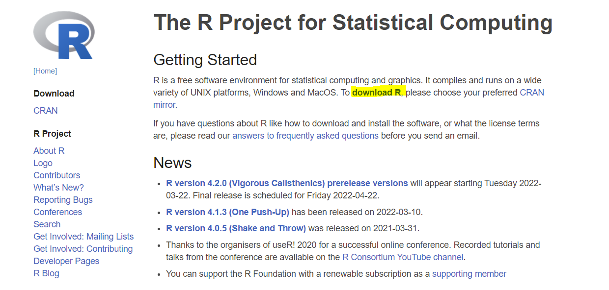
3 Setup
This chapter will walk you through downloading the R programming language as well as R Studio, which is a popular tool for interacting with the R ecosystem. Additionally, there are alternatives to R Studio listed at the end of the chapter. However, R Studio is the recommended environment for completing this book.
3.1 Install R
Before you do anything, you’ll need to download R. This download will allow your computer to interpret the R code you write later on.
Download R From R: The R Project for Statistical Computing
Select “download R”
- Choose any link but preferably the one closest to your physical location
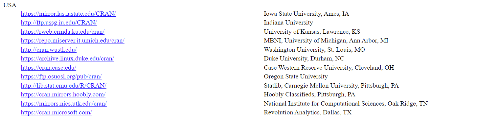
- Choose your operating system
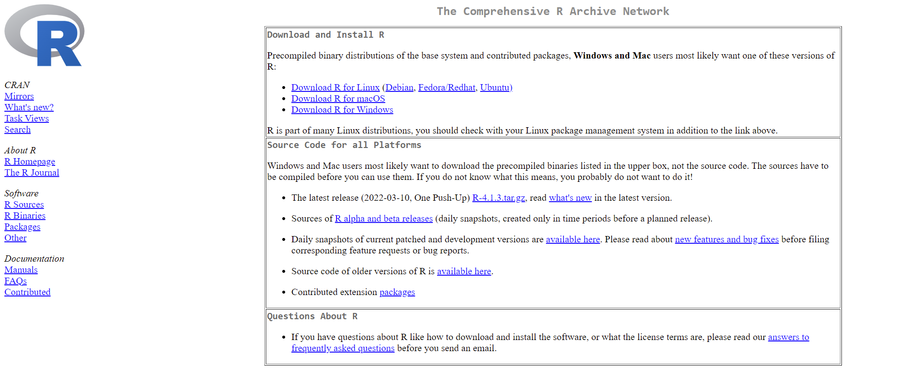
- Press “Install R for the first time”
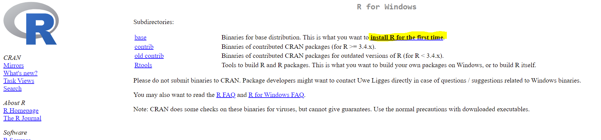
- Press “download”
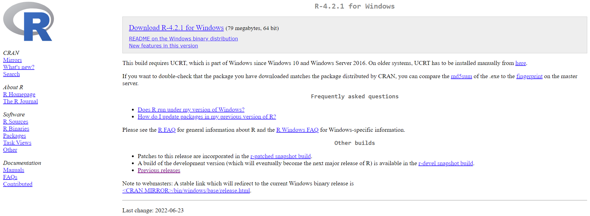
- Open installer
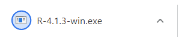
- Follow the prompts and leave all options set as their default values
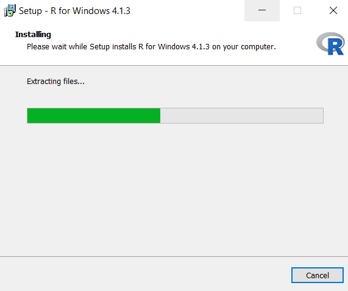
3.2 Install R Studio
After you install R, you’ll need an environment to write and run your code in. Most people use a program called “RStudio” for this. To download RStudio follow the steps listed below:
Navigate to the R Studio download site: Download the RStudio IDE
Press the “download” button under RStudio Desktop
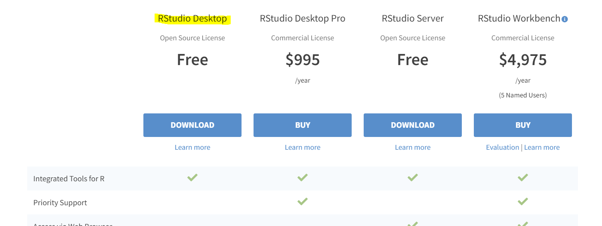
- Choose the download option for your operating system
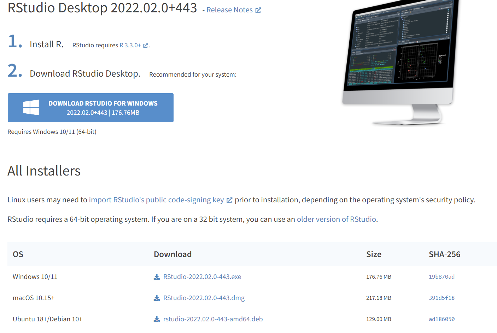
- Open the installer and accept all defaults
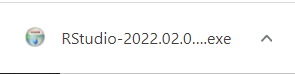
3.3 Alternatives
3.3.1 Posit Cloud
Posit Cloud offers users a way to replicate the full RStudio experience without having to download or set anything up on your personal computer. You can sign up for a free account here:
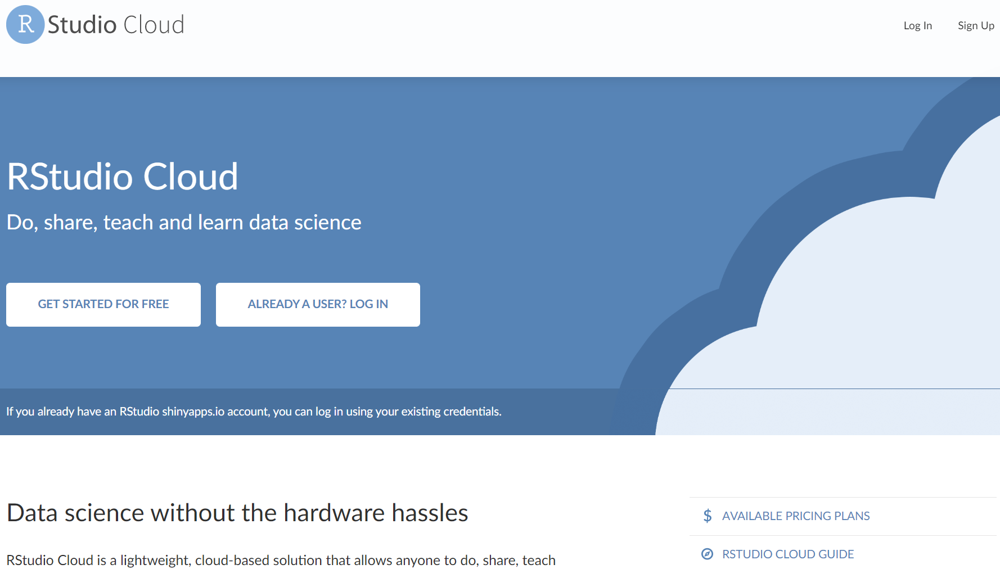
3.3.2 Replit
Replit allows users to code in 50+ languages in the browser. While you won’t be able to follow along with the RStudio specific examples, you will be able to run R code. You can sign up for a free account here:
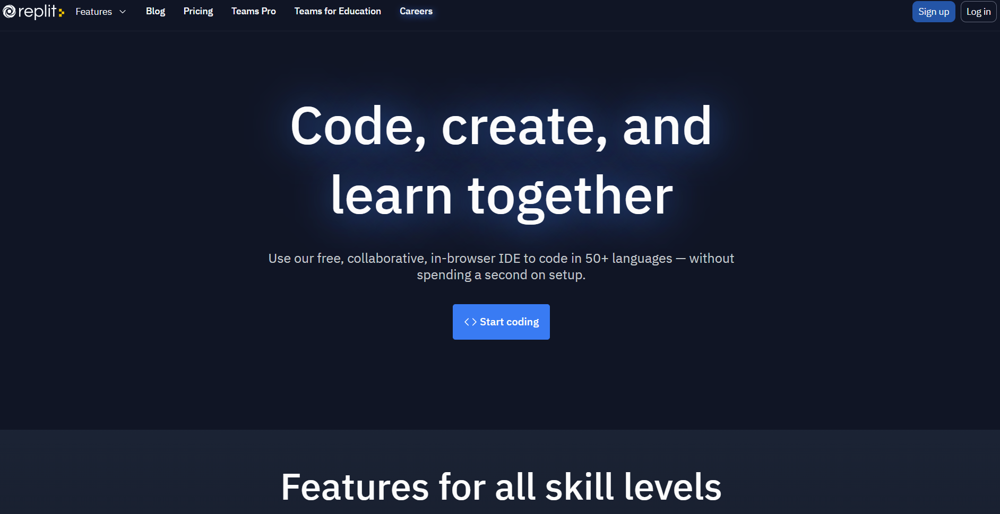
3.3.3 Kaggle
Kaggle is one of the most popular sites for data analysts to compete in data competitions, find data, and discuss data topics. They also have a feature that allows you to write and run R (and Python) code. You can sign up for a free account here:
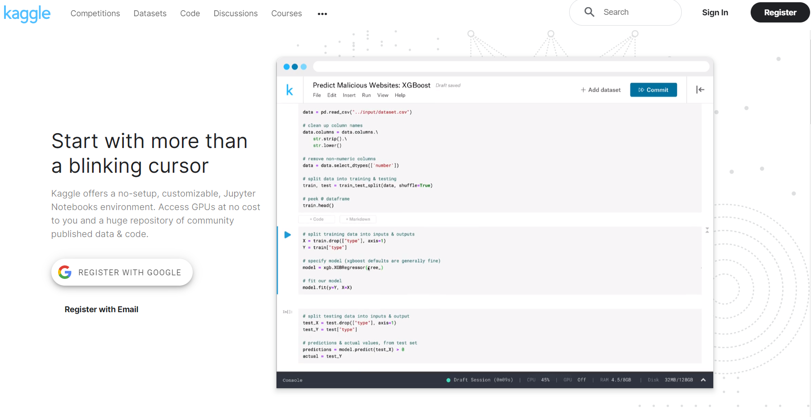
3.4 Resources
- “R Installation and Administration” by the R Core Team: https://cran.r-project.org/doc/manuals/r-release/R-admin.html